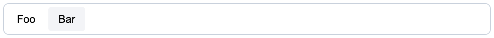

UI library
The standard UI library of CKEditor 5 is @ckeditor/ckeditor5-ui. It provides base classes and helpers that allow for building a modular UI that seamlessly integrates with other components of the ecosystem.
Views use templates to build the UI. They also provide observable interfaces that other features (like plugins or commands) can use to change the DOM without any actual interaction with the native API.
You can localize all views using the locale instance with which they were created. Check the localization guide to see how to use the t() function available in the locale instance.
You can define a simple input view class as follows:
class SimpleInputView extends View {
constructor( locale ) {
super( locale );
// An entry point to binding observables with DOM attributes,
// events, and text nodes.
const bind = this.bindTemplate;
// Views define their interface (state) using observable properties.
this.set( {
isEnabled: false,
placeholder: ''
} );
this.setTemplate( {
tag: 'input',
attributes: {
class: [
'foo',
// The value of "view#isEnabled" will control the presence
// of the class.
bind.if( 'isEnabled', 'ck-enabled' ),
],
// The HTML "placeholder" attribute is also controlled by the observable.
placeholder: bind.to( 'placeholder' ),
type: 'text'
},
on: {
// DOM "keydown" events will fire the "view#input" event.
keydown: bind.to( 'input' )
}
} );
}
setValue( newValue ) {
this.element.value = newValue;
}
}Views encapsulate the DOM they render. Because the UI is organized according to the view-per-tree rule, it is clear which view is responsible for which part of the UI. It is unlikely that a collision occurs between two features writing to the same DOM node.
More often than not, views become children of other views (collections), nodes in the UI view tree:
class ParentView extends View {
constructor( locale ) {
super( locale );
const childA = new SimpleInputView( locale );
const childB = new SimpleInputView( locale );
this.setTemplate( {
tag: 'div',
children: [
childA,
childB
]
} );
}
}
const parent = new ParentView( locale );
parent.render();
// This will insert <div><input .. /><input .. /></div>.
document.body.appendChild( parent.element );It is also possible to create standalone views that do not belong to any collection. They must be rendered before injection into the DOM:
const view = new SimpleInputView( locale );
view.render();
// This will insert <input class="foo" type="text" placeholder="" />
document.body.appendChild( view.element );Features can interact with the state of the DOM via the observable properties of the view, so the following:
view.isEnabled = true;
view.placeholder = 'Type some text';will result in:
<input class="foo ck-enabled" type="text" placeholder="Type some text" />Alternatively, they can bind them directly to their own observable properties:
view.bind( 'placeholder', 'isEnabled' ).to( observable, 'placeholderText', 'isEnabled' );
// The following will be automatically reflected in the "view#placeholder" and
// "view.element#placeholder" HTML attribute in the DOM.
observable.placeholderText = 'Some placeholder';Also, since views propagate DOM events, features can now react to the user actions:
// Each "keydown" event in the input will execute a command.
view.on( 'input', () => {
editor.execute( 'myCommand' );
} );A complete view should provide an interface for the features, encapsulating DOM nodes and attributes. Features should not touch the DOM of the view using the native API. Any kind of interaction must be handled by the view that owns a element to avoid collisions:
// This will change the value of the input.
view.setValue( 'A new value of the input.' );
// WRONG! This is **NOT** the right way to interact with the DOM because it
// collides with an observable binding to the "#placeholderText". The value will
// be permanently overridden when the state of the observable changes.
view.element.placeholder = 'A new placeholder';Templates render DOM elements and text nodes in the UI library. Used primarily by views, they are the lowest layer of the UI connecting the application to the web page.
Check out the TemplateDefinition to learn more about the template syntax and other advanced concepts.
Templates support observable properties bindings and handle native DOM events. A simple template can look like this:
new Template( {
tag: 'p',
attributes: {
class: [
'foo',
bind.to( 'class' )
],
style: {
backgroundColor: 'yellow'
}
},
on: {
click: bind.to( 'clicked' )
},
children: [
'A paragraph.'
]
} ).render();It renders to an HTML element:
<p class="foo bar" style="background-color: yellow;">A paragraph.</p>where observable#class is "bar". The observable in the example above can be a view or any object which is observable. When the value of the class attribute changes, the template updates the class attribute in the DOM. From now on the element is permanently bound to the state of the application.
Similarly, when rendered, the template also takes care of DOM events. A binding to the click event in the definition makes the observable always fire the clicked event upon an action in the DOM. This way the observable provides an event interface of the DOM element and all the communication should pass through it.
Views are organized into collections, which manage their elements and propagate DOM events even further. Adding or removing a view in a collection moves the view’s element in the DOM to reflect the position.
Each editor UI has a “root view” (like ClassicEditor#view), which can be found under editor.ui.view. Such a view usually defines the container element of the editor and the undermost view collections that other features can populate.
For instance, the BoxedEditorUiView class defines two collections:
top– A collection that hosts the toolbar.main– A collection that contains the editable area of the editor.
It also inherits the body collection which resides directly in the <body> of the web page. It stores floating elements like balloon panels.
Plugins can populate the root view collections with their children. Such child views become a part of the UI tree and will be managed by the editor. This means that, for example, they will be initialized and destroyed along with the editor.
class MyPlugin extends Plugin {
init() {
const editor = this.editor;
const view = new MyPluginView();
editor.ui.top.add( view );
}
}MyPluginView can create its view collections and populate them during the life cycle of the editor. There is no limit to the depth of the UI tree, which usually looks like this:
EditorUIView
├── "top" collection
│ └── ToolbarView
│ └── "items" collection
│ ├── DropdownView
│ │ ├── ButtonView
│ │ └── PanelView
│ ├── ButtonViewA
│ ├── ButtonViewB
│ └── ...
├── "main" collection
│ └── InlineEditableUIView
└── "body" collection
├── BalloonPanelView
│ └── "content" collection
│ └── ToolbarView
├── BalloonPanelView
│ └── "content" collection
│ └── ...
└── ...
The framework provides some common components like ButtonView or ToolbarView. They can be helpful when developing a new user interface.
For example, to create a toolbar with some buttons inside, you need to import the ToolbarView and ButtonView classes first:
import { ButtonView, ToolbarView } from 'ckeditor5';Create the toolbar and a couple of buttons with labels first. Then append the buttons to the toolbar:
const toolbar = new ToolbarView();
const buttonFoo = new ButtonView();
const buttonBar = new ButtonView();
buttonFoo.set( {
label: 'Foo',
withText: true
} );
buttonBar.set( {
label: 'Bar',
withText: true
} );
toolbar.items.add( buttonFoo );
toolbar.items.add( buttonBar );The toolbar can now join the UI tree or it can be injected straight into the DOM. To keep the example simple, proceed with the latter scenario:
toolbar.render();
document.body.appendChild( toolbar.element );The result should look like this:

The toolbar renders but it does not do much. To execute an action when the button is clicked, you must define a listener. To shorten the code and instead of two listeners define just one, the buttons can delegate the execute event to their parent:
buttonFoo.delegate( 'execute' ).to( toolbar );
buttonBar.delegate( 'execute' ).to( toolbar );
toolbar.on( 'execute', evt => {
console.log( `The "${ evt.source.label }" button was clicked!` );
} );The framework implements the dropdown component which can host any sort of UI in its panel. It is composed of a button (to open the dropdown) and a panel (the container).
The button can be either:
- A standard
ButtonView. - A
SplitButtonView, for more complex use cases.
The dropdown panel exposes its children collection which aggregates the child views. The most common views displayed in the dropdown panel are:
ListView- dropdown listToolbarView- dropdown toolbarDropdownMenuRootListView- dropdown menu
The framework provides a set of helpers to make the dropdown creation process easier. It is still possible to compose a custom dropdown from scratch using the base classes. However, for most needs, we highly recommend using provided helper functions.
The createDropdown helper creates a DropdownView with either a ButtonView or a SplitButtonView.
import { createDropdown, SplitButtonView } from 'ckeditor5';
const dropdownView = createDropdown( locale, SplitButtonView );This kind of (default) dropdown comes with a set of behaviors:
- It closes the panel when it loses the focus, for example, when the user moved the focus elsewhere.
- It closes the panel upon the
executeevent. - It focuses the view hosted in the panel, for example, when navigating the toolbar using the keyboard.
To customize the button of the dropdown, use the buttonView property. It gives direct access to the ButtonView instance used by your dropdown.
If your dropdown was created using the SplitButtonView, use the actionView to access its main region. For example: dropdownView.buttonView.actionView.set( /* ... */ ).
To control the label of the dropdown, first make it visible using the withText property. Then set the text of the label:
const dropdownView = createDropdown( locale );
dropdownView.buttonView.set( {
withText: true,
label: 'Label of the button',
} );The dropdown button can display an icon too. First, import the SVG file. Then pass it to the icon property of the button:
import iconFile from 'path/to/icon.svg';
// The code that creates a dropdown view.
// ...
dropdownView.buttonView.set( {
icon: iconFile
} );You can use one of the icons available in the editor. You can also add a custom icon to the dropdown by providing the entire XML string of the icon, like in this example:
<svg viewBox="0 0 20 20" xmlns="http://www.w3.org/2000/svg"><path d="M10.187 17H5.773c-.637 0-1.092-.138-1.364-.415-.273-.277-.409-.718-.409-1.323V4.738c0-.617.14-1.062.419-1.332.279-.27.73-.406 1.354-.406h4.68c.69 0 1.288.041 1.793.124.506.083.96.242 1.36.478.341.197.644.447.906.75a3.262 3.262 0 0 1 .808 2.162c0 1.401-.722 2.426-2.167 3.075C15.05 10.175 16 11.315 16 13.01a3.756 3.756 0 0 1-2.296 3.504 6.1 6.1 0 0 1-1.517.377c-.571.073-1.238.11-2 .11zm-.217-6.217H7v4.087h3.069c1.977 0 2.965-.69 2.965-2.072 0-.707-.256-1.22-.768-1.537-.512-.319-1.277-.478-2.296-.478zM7 5.13v3.619h2.606c.729 0 1.292-.067 1.69-.2a1.6 1.6 0 0 0 .91-.765c.165-.267.247-.566.247-.897 0-.707-.26-1.176-.778-1.409-.519-.232-1.31-.348-2.375-.348H7z"/></svg>If you want to have an icon that changes its color depending on the state of the button, you should remove all of the fill and stroke attributes.
The withText and icon properties are independent so your dropdown can have:
- Just a text label.
- Just an icon.
- Both a label and an icon at the same time.
Even if your dropdown has no visible label (withText is false), we recommend setting the label property anyway. Assistive technologies like screen readers need it to work correctly with the editor.
Dropdowns can also display tooltips when hovered. Use the tooltip property of the button to enable this feature. You can include keystroke information in the tooltip or create custom tooltips. Check out the documentation of the property to learn more.
dropdownView.buttonView.set( {
// The tooltip text will repeat the label.
tooltip: true
} );The ListView can be added to a dropdown using the addListToDropdown helper.
import { UIModel, addListToDropdown, createDropdown, Collection } from 'ckeditor5';
// The default dropdown.
const dropdownView = createDropdown( locale );
// The collection of the list items.
const items = new Collection();
items.add( {
type: 'button',
model: new UIModel( {
withText: true,
label: 'Foo'
} )
} );
items.add( {
type: 'button',
model: new UIModel( {
withText: true,
label: 'Bar'
} )
} );
// Create a dropdown with a list inside the panel.
addListToDropdown( dropdownView, items );A ToolbarView can be added to a dropdown using the addToolbarToDropdown helper.
import { ButtonView, SplitButtonView, addToolbarToDropdown, createDropdown } from 'ckeditor5';
const buttons = [];
// Add a simple button to the array of toolbar items.
buttons.push( new ButtonView() );
// Add another component to the array of toolbar items.
buttons.push( componentFactory.create( 'componentName' ) );
const dropdownView = createDropdown( locale, SplitButtonView );
// Create a dropdown with a toolbar inside the panel.
addToolbarToDropdown( dropdownView, buttons );A common practice is making the main dropdown button enabled when one of the toolbar items is enabled:
// Enable the dropdown's button when any of the toolbar items is enabled.
dropdownView.bind( 'isEnabled' ).toMany( buttons, 'isEnabled',
( ...areEnabled ) => areEnabled.some( isEnabled => isEnabled )
);A multi-level menu can be added to a dropdown using the addMenuToDropdown helper.
import { addMenuToDropdown, createDropdown } from 'ckeditor5';
// The default dropdown.
const dropdownView = createDropdown( editor.locale );
// The menu items definitions.
const definition = [
{
id: 'menu_1',
menu: 'Menu 1',
children: [
{
id: 'menu_1_a',
label: 'Item A'
},
{
id: 'menu_1_b',
label: 'Item B'
}
]
},
{
id: 'top_a',
label: 'Top Item A'
},
{
id: 'top_b',
label: 'Top Item B'
}
];
addMenuToDropdown( dropdownView, editor.body.ui.view, definition );Most probably you will want to perform some action when one of the defined buttons is pressed:
dropdownView.on( 'execute', evt => {
const id = evt.source.id;
console.log( id ); // E.g. will print "menu_1_a" when "Item A" is pressed.
} );The framework provides the UI dialog component. The dialog system in CKEditor 5 is brought by the Dialog plugin. It offers API for displaying views in dialogs. In a sense, this plugin corresponds to another one that manages views in balloons (popovers) across the UI (ContextualBalloon plugin).
Dialog is a pop-up window that does not close when the user clicks outside of it. It allows for interacting with the editor and its content while being open (unless it is a modal, which blocks the interaction with the rest of the page until closed). A dialog is also draggable with a mouse or touch if you configure it to display a header. Only one dialog can be open at a time – opening another one closes the previously visible one.
Check out these example plugins that display:
- a dialog window,
- a modal window.
Learn more about the structure and behavior of dialog windows.
Modals are similar to the dialogs – they share the same structure rules, API, etc. The major difference is that while a modal is open, the user cannot interact with the editor or the rest of the page. They are covered with a non-transparent overlay. You can use a modal, for example, to force the user to take one of the specified actions.
To create a modal, use the optional isModal property of the Dialog#show() method:
editor.plugins.get( 'Dialog' ).show( {
isModal: true,
// The rest of the dialog definition.
} );There are different ways to close a modal:
- Clicking the “Close” button in the corner (if the header is visible).
- Using the Esc keystroke or one of the action buttons.
Below you will learn about the ways to disable some of these methods. Remember to always leave at least one option to close the modal. Otherwise, you will lock the users inside a modal.
A dialog can consist of three parts, each of which is optional:
- The header (also used as a drag handler).
- The content (the body of the dialog).
- The action buttons area (a collection of buttons).
You cannot change the order of these parts.
A header may consist of any combination of three elements:
- The icon.
- The title.
- The “Close” button.
By default, the “Close” button (“X”) is added to the header as long as you provide an icon or a title. To hide it, set the hasCloseButton flag to false:
import { IconPencil } from 'ckeditor5';
// ...
editor.plugins.get( 'Dialog' ).show( {
icon: IconPencil,
title: 'My first dialog',
// Do not display the "Close" button.
hasCloseButton: false,
// The rest of the dialog definition.
} );If you decide to hide the “Close” button, remember to leave some other way to close the dialog. The Esc keystroke also closes the dialog but it may not be available, for example, for touch screen users.
This part can be a single view or a collection of views. They will be displayed directly inside the body of the dialog. Below, you can find an example of how to insert a block of text into the dialog.
const textView = new View( locale );
textView.setTemplate( {
tag: 'div',
attributes: {
style: {
padding: 'var(--ck-spacing-padding-comfortable)',
whiteSpace: 'initial',
width: '100%',
maxWidth: '500px'
},
tabindex: -1
},
children: [
'This is a sample content of the dialog.',
'You can put here text, images, inputs, buttons, etc.'
]
} );
editor.plugins.get( 'Dialog' ).show( {
title: 'Info dialog with text',
content: textView,
// The rest of the dialog definition.
} );The content of the dialog determines its dimensions. If you want to display a dialog with a fixed size, make sure the content has a fixed size too. For displaying long text, we recommend setting max-height: [fixed value] together with overflow: auto on the content container (element). This will restrict the vertical space the dialog will use on the screen.
The last segment of the dialog is the actions area, where the buttons are displayed. You can fully customize their behavior using the onCreate() and onExecute() callbacks. Below you can find an example of the configuration for the four custom buttons:
- The “OK” button that closes the dialog and has a custom CSS class set.
- The “Set custom title” button that changes the dialog title.
- The “This button will be enabled in…” button that changes its state after a few seconds.
- The “Cancel” button that closes the dialog.
editor.plugins.get( 'Dialog' ).show( {
// ...
actionButtons: [
{
label: 'OK',
class: 'ck-button-action',
withText: true,
onExecute: () => dialog.hide()
},
{
label: 'Set custom title',
withText: true,
onExecute: () => {
dialog.view.headerView.label = 'New title';
}
},
{
label: 'This button will be enabled in 5...',
withText: true,
onCreate: buttonView => {
buttonView.isEnabled = false;
let counter = 5;
const interval = setInterval( () => {
buttonView.label = `This button will be enabled in ${ --counter }...`;
if ( counter === 0 ) {
clearInterval( interval );
buttonView.label = 'This button is now enabled!';
buttonView.isEnabled = true;
}
}, 1000 );
}
},
{
label: 'Cancel',
withText: true,
onExecute: () => dialog.hide()
}
]
} );You can also bind the button state to the content to ensure some required actions were taken by the user. See the example of the “Yes/No modal” definition. It requires the user to mark the checkbox to close the modal:
// First, create the content to be injected into a the modal.
// In this example a simple switch button is used.
const switchButtonView = new SwitchButtonView( locale );
switchButtonView.set( {
label: t( 'I accept the terms and conditions' ),
withText: true
} );
// Manage the state of the switch button when the user clicks it.
switchButtonView.on( 'execute', () => {
switchButtonView.isOn = !switchButtonView.isOn;
} );
// Then show the modal.
editor.plugins.get( 'Dialog' ).show( {
id: 'yesNoModal',
isModal: true,
title: 'Accept the terms to enable the "Yes" button',
hasCloseButton: false,
content: switchButtonView,
actionButtons: [
{
label: t( 'Yes' ),
class: 'ck-button-action',
withText: true,
onExecute: () => dialog.hide(),
onCreate: buttonView => {
// By default, the "Yes" button in the dialog is disabled.
buttonView.isEnabled = false;
// The "Yes" button will be enabled as soon as the user
// toggles the switch button.
switchButtonView.on( 'change:isOn', () => {
buttonView.isEnabled = switchButtonView.isOn;
} );
}
},
{
label: t( 'No' ),
withText: true,
onExecute: () => dialog.hide()
}
],
// Disable the "Esc" key.
onShow: dialog => {
dialog.view.on( 'close', ( evt, data ) => {
if ( data.source === 'escKeyPress' ) {
evt.stop();
}
}, { priority: 'high' } );
}
} );Dialogs provide full keyboard accessibility.
- While a dialog is open, strike the Ctrl+F6 combination to move the focus between the editor and the dialog.
- You can also close a dialog at any time by pressing the Esc key (even if the “Close” button is hidden).
- To navigate through the dialog, use the Tab and Shift+Tab keystrokes.
The content of the dialog is also available for screen readers.
The dialog’s lifecycle (creating and destroying) is managed by the Dialog plugin. It provides two public methods: show() and hide(). Both of them fire the respective events (show and hide), so it is possible to hook after or before them.
The Dialog#show() method hides any visible dialog and displays a new one. It accepts a dialog definition that allows to shape the structure and behavior of the dialog. See the DialogDefinition API to learn more about the possibilities it gives.
When the Dialog#show() function gets called, a namespaced show:[id] event is fired. This allows for customizing the dialog’s behavior.
For example, you can change the default position of the “Find and replace” dialog from the editor corner to the bottom with the following code:
import { DialogViewPosition } from 'ckeditor5';
// ...
editor.plugins.get( 'Dialog' ).on( 'show:findAndReplace', ( evt, data ) => {
Object.assign( data, { position: DialogViewPosition.EDITOR_BOTTOM_CENTER } );
}, { priority: 'high' } );You can also listen to the general 'show' event to customize all dialogs at once.
Executing the Dialog#hide() method will hide the dialog. It will also call the onHide() callback if it was provided in the respective Dialog#show() method call.
Similarly to the show:[id] event, the hide:[id] event gets fired when the Dialog#hide() is called. It allows for executing custom actions:
// Logs after the "Find and Replace" dialog gets hidden.
editor.plugins.get( 'Dialog' ).on( 'hide:findAndReplace', () => {
console.log( 'The "Find and Replace" dialog was hidden.' );
} );You can also listen to the general 'hide' event to react to all dialogs at once.
When the Esc key or the “Close” button is pressed with the dialog open, the DialogView fires the close event with the according source parameter. Then the Dialog plugin hides (and destroys) the dialog.
You can control this behavior, for example, disabling the Esc key handling:
editor.plugins.get( 'Dialog' ).view.on( 'close', ( evt, data ) => {
if ( data.source === 'escKeyPress' ) {
evt.stop();
}
} )You can also pass such code directly in the show() method call in the onShow callback:
editor.plugins.get( 'Dialog' ).show( {
onShow: dialog => {
dialog.view.on( 'close', ( evt, data ) => {
if ( data.source === 'escKeyPress' ) {
evt.stop();
}
}, { priority: 'high' } );
}
// The rest of the dialog definition.
} );Blocking the usage of the Esc key limits the accessibility. It is considered a bad practice. If you need to do this, remember to always leave at least one way to close the dialog or modal.
The DialogDefinition accepts two callbacks. They allow customizing the actions after the dialog is shown (onShow()) and hidden (onHide()).
The onShow callback allows you to manipulate the dialog values or set additional listeners. In the DialogView#event:close event section you can find an example of how to disable the Esc key with it. The code below shows how to bootstrap the dynamic field filling.
// Import necessary classes.
import { View, InputTextView } from 'ckeditor5';
// Create an input.
const input = new InputTextView();
const dialogBody = new View();
dialogBody.setTemplate( {
tag: 'div',
children: [
// Other elements of the view.
input
]
// The rest of the template.
} );
editor.plugins.get( 'Dialog' ).show( {
onShow: () => {
// Set the dynamic initial input value.
input.value = getDataFromExternalSource();
},
// The rest of the dialog definition.
} );The onHide callback will be particularly helpful to reset the state of the component or its controller once the dialog is closed.
// Executing inside a class with the "controller" property that has the state connected to the dialog.
editor.plugins.get( 'Dialog' ).show( {
onHide: dialog => {
this.controller.reset(); // Reset the controller state once the dialog is hidden.
},
// The rest of the dialog definition.
} );Only one dialog can be visible at the same time. Opening another dialog (from the same or another editor instance) will close the previous dialog.
If not specified otherwise, the dialog will display in the center of the editor’s editing area. A modal will display in the center of the screen. Custom dialogs can have their position set to one of the pre-configured options (see DialogViewPosition). The relative positioning is disabled once the dialog is manually dragged by the user.
- When you develop your dialog, specify the
positionproperty in a definition passed to theDialog#show()method, for instance:
import { DialogViewPosition } from 'ckeditor5';
// ...
const dialog = editor.plugins.get( 'Dialog' );
dialog.show( {
// ...
// Change the default position of the dialog.
position: DialogViewPosition.EDITOR_BOTTOM_CENTER
} );- To change the position of an existing dialog or manage positions dynamically, use the
showevent listener (see the example code).
Sometimes, when the content of the dialog or the environment changes (for example, the editor is resized), you may want to force-update the position of the dialog. This will restore its position to the configured default. It will also reset any manual positioning (dragging) done by the user. To do so, use the updatePosition method.
editor.plugins.get( 'Dialog' ).view.updatePosition();For the best user experience, the editing view should get focused upon any user action (like executing a command) to make sure the editor retains focus:
// Execute some action on the "dropdown#execute" event.
dropdownView.buttonView.on( 'execute', () => {
editor.execute( 'command', { value: "command-value" } );
editor.editing.view.focus();
} );The framework offers built-in classes that help manage keystrokes and focus in the UI. They are useful when it comes to bringing accessibility features to the application.
If you want to know how the editor handles focus under the hood and what tools make it possible, check out the Deep dive into focus tracking guide.
The FocusTracker class can observe some HTML elements and determine if one of them is focused either by the user (clicking, typing) or using the HTMLElement.focus() DOM method.
import { FocusTracker } from 'ckeditor5';
// More imports.
// ...
const focusTracker = new FocusTracker();To register elements in the tracker, use the add() method:
focusTracker.add( document.querySelector( '.some-element' ) );
focusTracker.add( viewInstance.element );Observing the focus tracker’s isFocused observable property allows you to determine whether one of the registered elements is currently focused:
focusTracker.on( 'change:isFocused', ( evt, name, isFocused ) => {
if ( isFocused ) {
console.log( 'The', focusTracker.focusedElement, 'is focused now.' );
} else {
console.log( 'The elements are blurred.' );
}
} );This information is useful when implementing a certain type of UI whose behavior depends on the focus. For example, contextual panels and floating balloons containing forms should hide when the user decides to abandon them.
Learn more about the focus tracker class in the Deep dive into focus tracking guide.
The KeystrokeHandler listens to the keystroke events fired by an HTML element or any of its descendants. It executes pre-defined actions when the keystroke is pressed. Usually, each view creates its keystroke handler instance. It takes care of the keystrokes fired by the elements the view has rendered.
import { KeystrokeHandler } from 'ckeditor5';
// More imports.
// ...
const keystrokeHandler = new KeystrokeHandler();To define the scope of the keystroke handler in the DOM, use the listenTo() method:
keystrokeHandler.listenTo( document.querySelector( '.some-element' ) );
keystrokeHandler.listenTo( viewInstance.element );Check out the list of known key names supported by the keystroke handler.
Keystroke action callbacks are functions. To prevent the default action of the keystroke and stop further propagation, use the cancel() function provided in the callback.
keystrokeHandler.set( 'Tab', ( keyEvtData, cancel ) => {
console.log( 'Tab was pressed!' );
// This keystroke has been handled and can be canceled.
cancel();
} );There is also an EditingKeystrokeHandler class which has the same API as KeystrokeHandler but it offers direct keystroke bindings to editor commands.
The editor provides such a keystroke handler under the editor.keystrokes property so any plugin can register keystrokes associated with editor commands. For example, the Undo plugin registers editor.keystrokes.set( 'Ctrl+Z', 'undo' ); to execute its undo command.
When you assign multiple callbacks to the same keystroke, you can use priorities to decide which one to handle first and whether to execute other callbacks at all:
keystrokeHandler.set( 'Ctrl+A', ( keyEvtData ) => {
console.log( 'A normal priority listener.' );
} );
keystrokeHandler.set( 'Ctrl+A', ( keyEvtData ) => {
console.log( 'A high priority listener.' );
// The normal priority listener will not be executed.
cancel();
}, { priority: 'high' } );Pressing Ctrl+A will log:
"A high priority listener."
Check out the event system deep dive guide to learn more about event listener priorities.